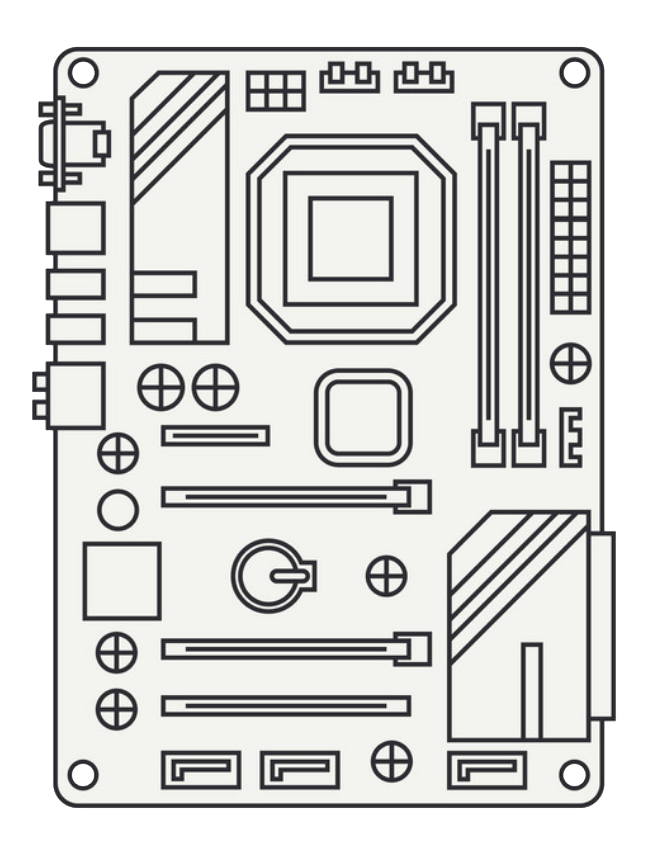
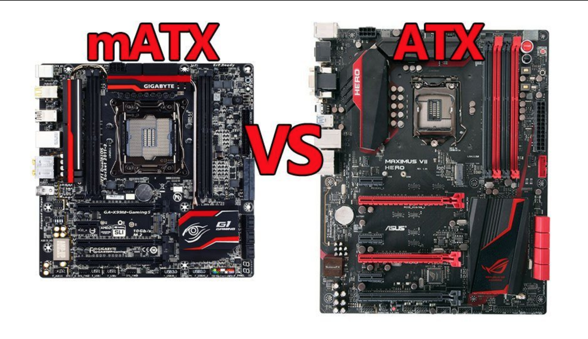
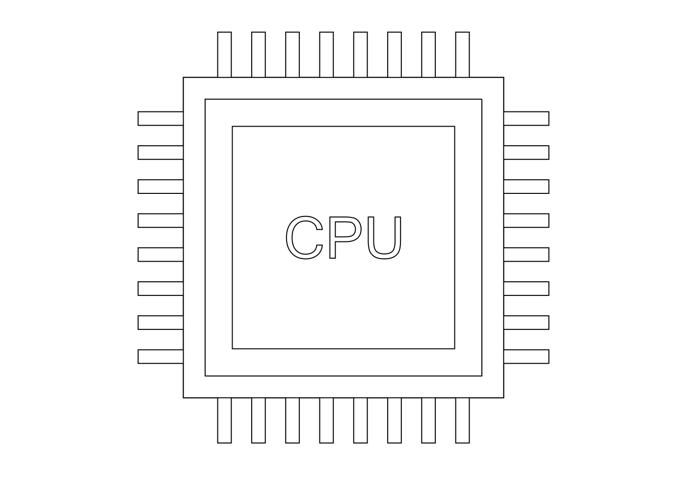
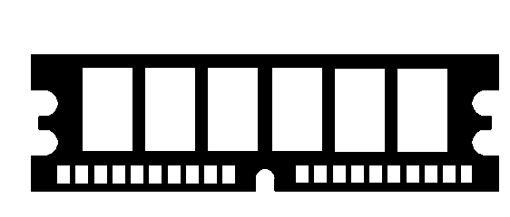
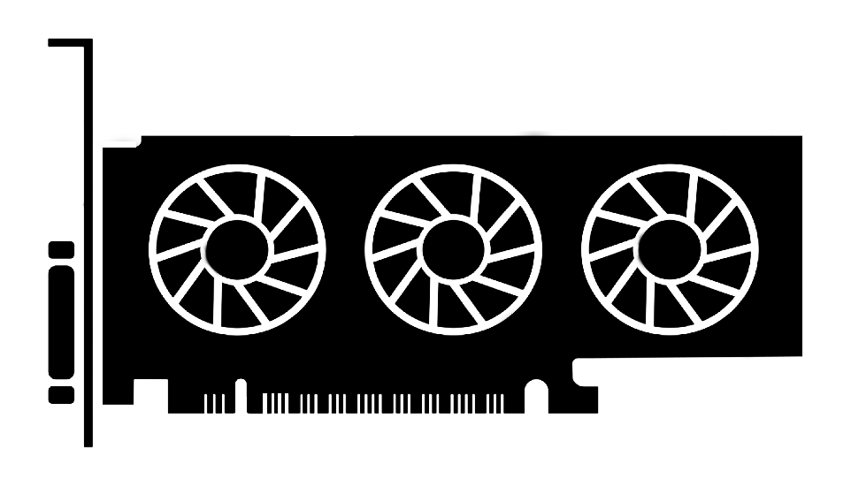
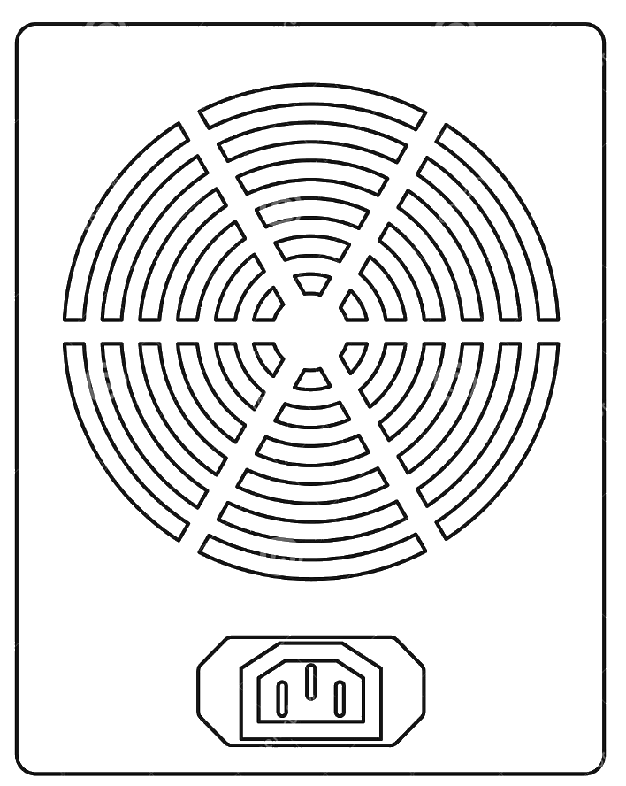
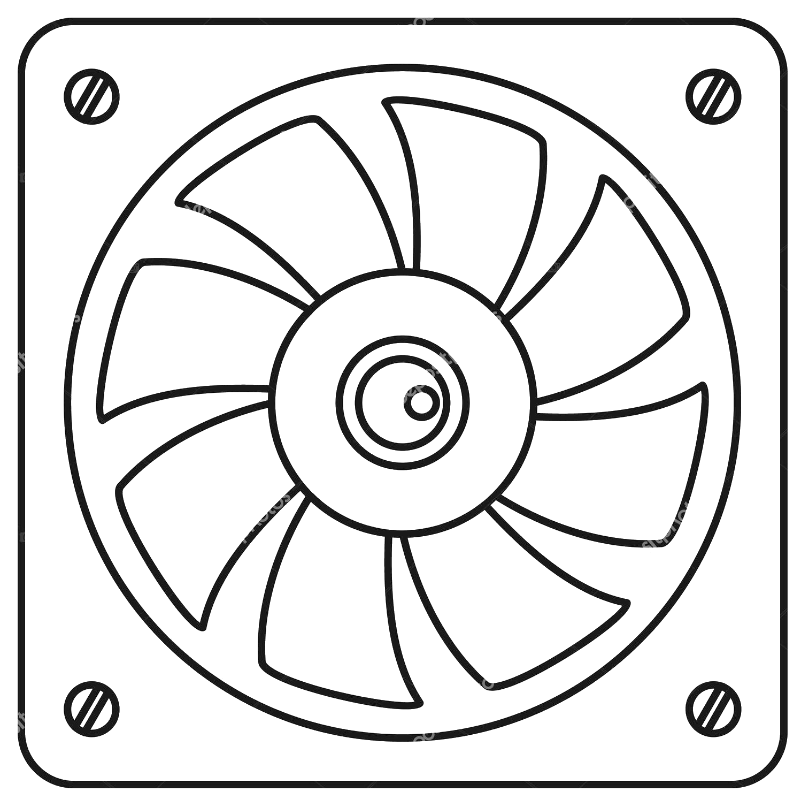
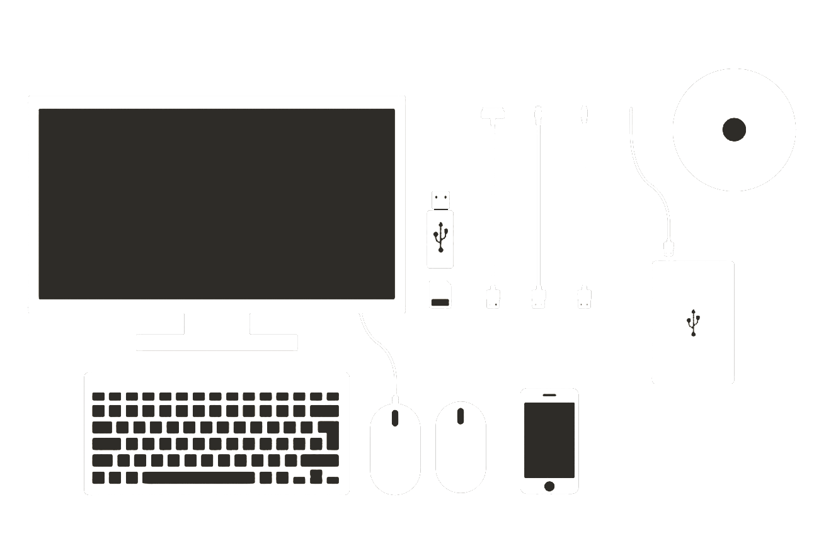
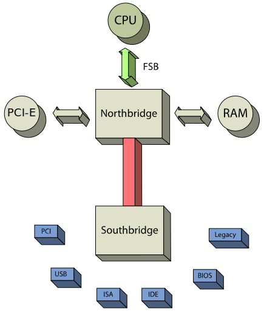

Computer Architecture
Computer Architecture
What is a computer today?
-
Main instrument for a lot of modern jobs
-
Powerful machine for different computations
-
Important part of programmer work
Computer

System Block
Motherboard

-
"Nervous system" of the computer
-
Organize's computer details and force them to work together
-
Have multiple different features, that can change UX of
computer usage dramaticaly
Form Factor

CPU

-
Brain of the computer
-
AMD or Intel?
-
Pay attention to the generation and techprocces
RAM

-
Memory for launched applications
-
Pay attention to DDR generation
-
8 or 16 GB will be enough
PCI & Videocard

-
PCI is an interface with fast speed and big throughput
-
The main usage of PCI is videocard.
Hard Drives
-
Memory that computer uses to store information
-
SSD and HDD
-
1 or 2 TB will be enough
PSU (Power Supply Unit)

-
"Heart" of the computer
-
Provide electricity to components
-
Pay attention to the power
Fan

-
CPU fans and case fans
-
Pay attention to TDP
Periphery

How does it work together

-
FSB
-
Two Bridges
THANKS FOR WATCHING